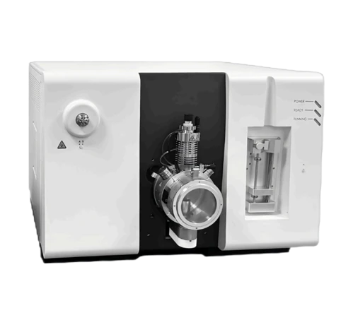

Масс-спектрометрия
TQ 1620
Тройной квадрупольный масс-спектрометр
- m/z 5–2000
- 10 000 а.е.м./с
- Предел обнаружения <6 фг
- С/Ш >200 000:1
- 4 порядка динамического диапазона
- Двойной источник ионов ESI + APCI
BIKAI TQ 1620 — высокопроизводительный тройной квадрупольный масс-спектрометр с быстросъёмным двойным источником ионов ESI/APCI, эффективной передачей ионов, коллизионной ячейкой с изогнутой траекторией 180° и линейным ускорением, а также стабильным тройным квадрупольным анализатором. Поддерживает MS/MS, MRM, SIM, Full Scan, Product Ion Scan, Precursor Ion Scan и Neutral Loss Scan. Система использует особо чистый азот как для небулизации, так и в качестве коллизионного газа и может комплектоваться генератором азота, что снижает потребность в дополнительных газовых баллонах. Хорошо подходит для фармацевтического анализа, контроля безопасности пищевых продуктов, экологического мониторинга и научных исследований.
Основные характеристики
| Параметр | Характеристика |
| Тип масс-спектрометра | Triple Quadrupole Mass Spectrometer |
| Источник ионов | ESI + APCI dual ion source |
| Переключение источника ионов | Plug-and-play design; replacement in approx. 30 seconds |
| Скорость потока ESI | 5 µL/min – 3 mL/min |
| Скорость потока APCI | 200 – 2000 µL/min |
| Максимальная температура нагрева | 750 °C |
| Диапазон масс | m/z 5–2000 |
| Скорость сканирования | До 10,000 amu/s |
| Разрешение по массе | <0.8 amu |
| Стабильность по массе | 0.1 amu / 24 h |
| Динамический диапазон | 4 orders of magnitude |
| Чувствительность MRM | S/N >200,000:1 for reserpine, MRM 609/195 |
| Предел обнаружения прибора (IDL) | <6 fg for reserpine, ESI+ |
| Режимы сканирования | Full Scan, SIM, Product Ion, Precursor Ion, Neutral Loss, MRM |
| Воспроизводимость | Peak area RSD <5.0%; retention time RSD <5.0% |
| Коллизионная ячейка | 180° curved linear acceleration collision cell |
| Газовая система | High-purity nitrogen for nebulization and collision gas |
| Вакуумная система | Mechanical pump + integrated multi-port turbo molecular pump |
| Скорость механической откачки | 40 m³/h |
| Система сбора данных | Windows 10 и выше, 64-бит |
| Язык ПО | китайский / английский |